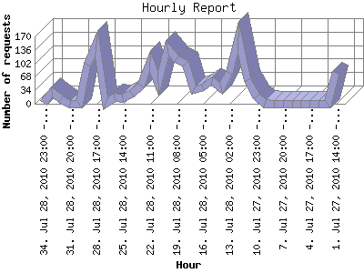

The Hourly Report identifies the level of activity for each hour within the report timeframe. Remember that one page hit can result in several server requests as the images for each page are loaded.

| Hour | Number of requests | Number of page requests | |
|---|---|---|---|
| 1. | Jul 27, 2010 14:00 - 14:59 | 78 | 4 |
| 2. | Jul 27, 2010 15:00 - 15:59 | 0 | 0 |
| 3. | Jul 27, 2010 16:00 - 16:59 | 0 | 0 |
| 4. | Jul 27, 2010 17:00 - 17:59 | 0 | 0 |
| 5. | Jul 27, 2010 18:00 - 18:59 | 0 | 0 |
| 6. | Jul 27, 2010 19:00 - 19:59 | 0 | 0 |
| 7. | Jul 27, 2010 20:00 - 20:59 | 0 | 0 |
| 8. | Jul 27, 2010 21:00 - 21:59 | 0 | 0 |
| 9. | Jul 27, 2010 22:00 - 22:59 | 0 | 0 |
| 10. | Jul 27, 2010 23:00 - 23:59 | 18 | 0 |
| 11. | Jul 28, 2010 00:00 - 00:59 | 59 | 4 |
| 12. | Jul 28, 2010 01:00 - 01:59 | 168 | 0 |
| 13. | Jul 28, 2010 02:00 - 02:59 | 77 | 0 |
| 14. | Jul 28, 2010 03:00 - 03:59 | 39 | 0 |
| 15. | Jul 28, 2010 04:00 - 04:59 | 58 | 0 |
| 16. | Jul 28, 2010 05:00 - 05:59 | 41 | 0 |
| 17. | Jul 28, 2010 06:00 - 06:59 | 35 | 0 |
| 18. | Jul 28, 2010 07:00 - 07:59 | 100 | 0 |
| 19. | Jul 28, 2010 08:00 - 08:59 | 112 | 0 |
| 20. | Jul 28, 2010 09:00 - 09:59 | 141 | 0 |
| 21. | Jul 28, 2010 10:00 - 10:59 | 50 | 0 |
| 22. | Jul 28, 2010 11:00 - 11:59 | 108 | 0 |
| 23. | Jul 28, 2010 12:00 - 12:59 | 46 | 0 |
| 24. | Jul 28, 2010 13:00 - 13:59 | 26 | 0 |
| 25. | Jul 28, 2010 14:00 - 14:59 | 13 | 0 |
| 26. | Jul 28, 2010 15:00 - 15:59 | 17 | 0 |
| 27. | Jul 28, 2010 16:00 - 16:59 | 0 | 0 |
| 28. | Jul 28, 2010 17:00 - 17:59 | 152 | 0 |
| 29. | Jul 28, 2010 18:00 - 18:59 | 99 | 0 |
| 30. | Jul 28, 2010 19:00 - 19:59 | 0 | 0 |
| 31. | Jul 28, 2010 20:00 - 20:59 | 1 | 0 |
| 32. | Jul 28, 2010 21:00 - 21:59 | 12 | 0 |
| 33. | Jul 28, 2010 22:00 - 22:59 | 29 | 0 |
| 34. | Jul 28, 2010 23:00 - 23:59 | 2 | 0 |
Most active hour Jul 27, 2010 14:00 - 14:59 : 4 pages sent. 168 requests handled.
Hourly average: 0 pages sent. 61 requests handled.
This report was generated on July 29, 2010 02:29.
Report time frame July 27, 2010 14:23 to July 28, 2010 23:30.
| Web statistics report produced by: analog 6.0 / Report Magic 2.21 |